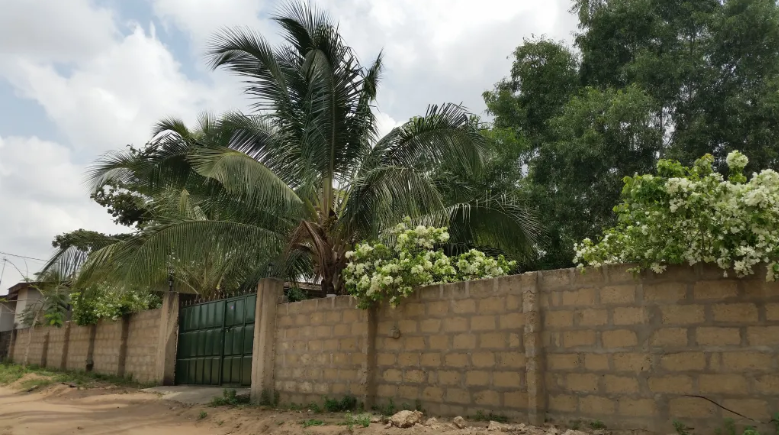
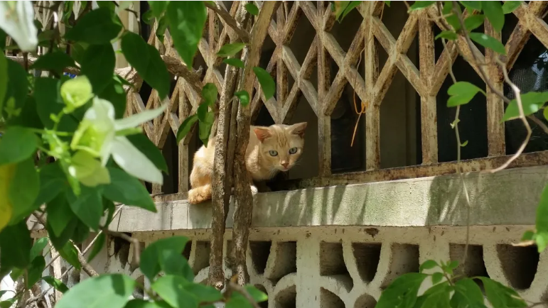
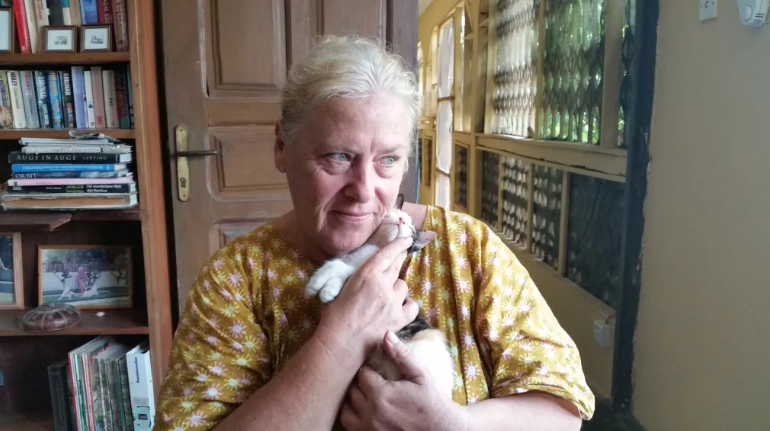

#Latest Blog Post
By Antonella Sinopoli on March 1, 2015



Sometimes you meet people who make you love life more than you already do. People who understand, and leave aside superficial satisfactions to cultivate something deeper.
Fiorenza is one of these.
She explains it with a Buddhist parable. A monk and his "student" find themselves on a beach where, after a violent storm, hundreds and hundreds of fish are stranded (and gasping for air). The monk picks one up and brings it back to the sea. Then the "student" asks: what's the point of saving one? There are hundreds and hundreds of them . And he, calmly, lifts another one and before throwing it into the open sea, replies: it makes sense to him .
Yes, it makes sense to save just one life . That life, that one life, is precious.
Fiorenza saves cats . She saves them from death by disease, malnutrition, and... hunting. Yes, because here in Ghana, cats are considered a delicacy, eaten on holidays.
Fiorenza has lived in Ghana for 12 years. Her disappointments and experiences—negative, positive, everything works out, everything teaches, everything helps—are countless. She has given space to her heart , to her passion for these mystical creatures.
Going against the grain—and counterculture—she opened a sanctuary for cats . She couldn't have chosen a more fitting name. A sanctuary is a refuge, a protected place, a place of love and peace.
At her sanctuary—in Kasoa, on the road to Cape Coast—there are currently 35 kittens. They're picked up off the streets, cared for, and cared for. They get two meals a day, a vet whenever needed, and lots of love. It's not easy to support financially.
Sometimes, people make small donations. Much more often, someone (an expatriate) leaves the country, and with them their cat. It's not uncommon for a local to knock on her door and ask if she has a good cat to sell. She tries to explain that she protects cats from those who eat them, mistreat them, and abandon them.
They look at her as if to say: she's crazy . But what does it matter? I was also struck by her inability to judge: eating cats is part of their culture... It's true. After all, there are those who consider it immoral or absurd to eat cows or pigs...
Fiorenza calls all her friends/cats by name, of course. And she speaks to them in her native language, Trieste dialect. I'm not surprised. With those you love, you use, or would like to use, the language of the heart . They understand her—I swear—and they are grateful. I can't wait to return to her sanctuary: the silence, the colors of every type of tree, the scent of flowers... but above all, these wonderful, lucky cats.
Whoever has a purpose in life is a happy person , reminds my teacher, Daisaku Ikeda.